RHoMIS Crows Nest: Farmer Heterogeneity Analysis
23/06/2022
What is Heterogeneity
 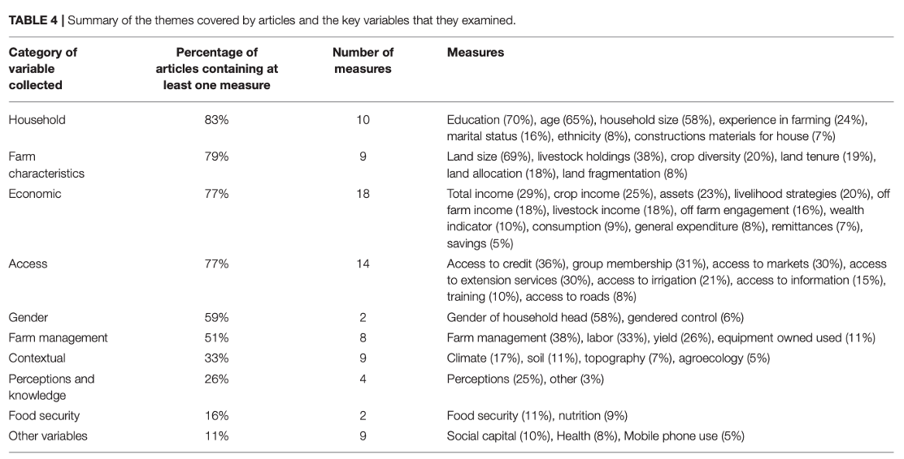
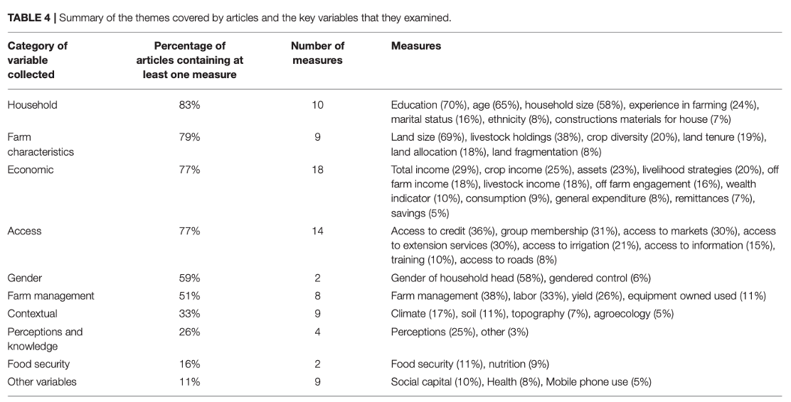
Why do We Care?
“In recent years, many studies have demonstrated the heterogeneity of the smallholder production environment. Yet agronomic research for development (R4D) that aims to identify and test options for increasing productivity has not consistently adapted its approaches to such heterogeneous conditions.”
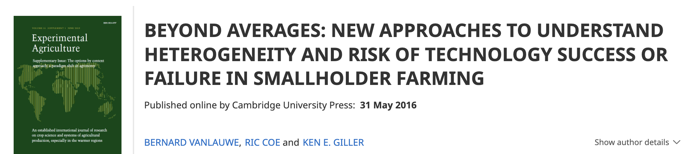
Why do We Care?
“IFAD’s comparative advantage lies in its targeting of the poorest, the poor and the vulnerable peoples and those who are most likely to have little access to assets and opportunities due to social exclusion and marginalization”
Article 5
Why do We Care?
“… Member States indicated that they will seek to increase and use high-quality, timely and reliable data disaggregated by sex, age, geography, income, race, ethnicity, migratory status, disability and other characteristics relevant in national contexts”
General Assembly resolution 69/313
Heterogeneity and Targetting
“To target food security interventions for smallholder households, decision makers need large-scale information, such as maps on poverty, food security and key livelihood activities”
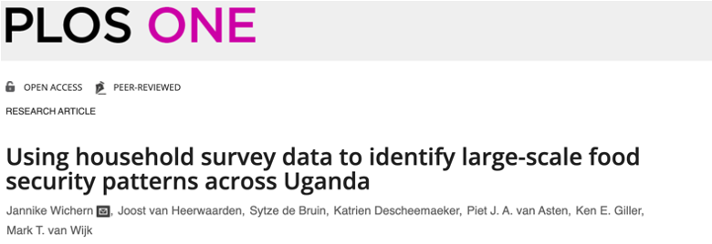
Heterogeneity and Targetting
“…(farm size) estimates help inform agricultural development strategies, although the estimates are limited by the data available.”
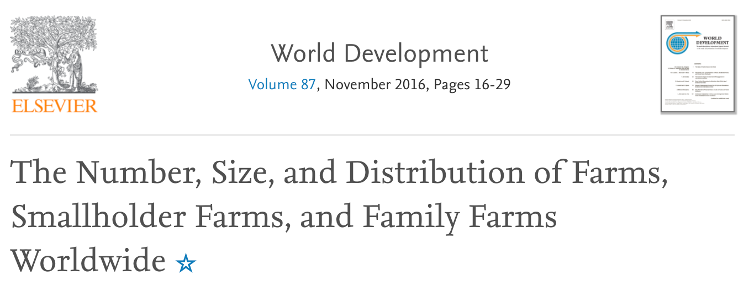
Heterogeneity and Targetting
“This practice is for the purpose of identifying an agricultural technology or other development intervention which might benefit one type but not another – for the “targeting” of agricultural innovations”
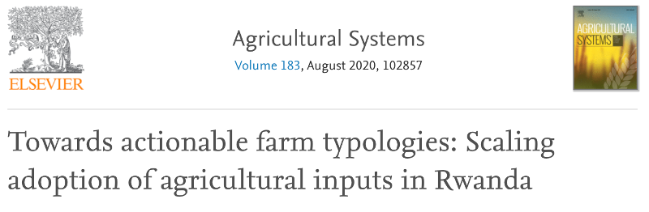
Methods to Capture Heterogeneity
Indirect Estimation
Using two or more known variables to estimate your target
Advantages
- Can produce estimates with large coverage
- Intuitive
Disadvantages
- Need assumptions about distribution of target
- Limited to known close associations
- Can reinforce existing assumptions when incorrect
Household Level Estimates
Using associations between household and/or environmental characteristics to predict household level outcomes
Advantages
- Can show drivers when explainable methods are used
- Can generate estimates with uncertainty
Disadvantages
- Until now, assumptions made about distribution
- Outliers and significant local heterogeneity make it difficult to identify largescale variations
Area Level Estimates
Using associations between spatial indicators to predict a statistic for an “area”
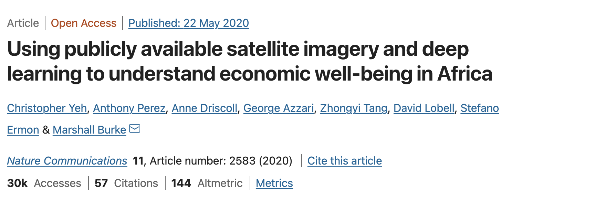
Advantages
- Can draw on data with large spatial coverage
Disadvantages
- Difficult to validate in applied setting
- Local level heterogeneity often dominates
- Obsession with the mean
Clustering
Identifying typologies by identifying multi-dimensional similarities
Advantages
- Could be used for intuitive groupings for field work
- Flexible for manageable groupings
Disadvantages
- Focuses on single level similarities
- Difficult to transfer
- Interpretation of clusters could be subject to bias
- In heterogeneous environments the “tightness” of the clusters can be questionable
Interpolation
Smoothing between points to “fill in the gaps”
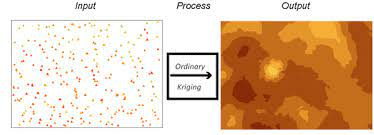
Advantages
- Intuitive
- Can lead to predictions with large spatial coverage
- Easy to transfer to temporal interpolations
Disadvantages
- Cannot deal with stepwise changes
- Large uncertainties with patchy
- No real explanation of the spatial variation
What are we really trying to answer?
What Works?
- Villages
- Subnational units
- Agro-ecological zones
For Who?
- Demographic groups
- Wealth quartiles
- Practices?
- Villages
- Subnational units
- Agro-ecological zones
Why?
- Household demographics
- Practices
- Spatial drivers
- Traditional mapping and heterogeneity efforts often assume importance of particular variables
Issues with Current Methods
In each of the approaches there are assumptions about:
- At which level heterogeneity is most relevant/dominates
- Which level of heterogeneity is most useful to policy makers
- The distribution of outcome variables (mean correlated with need for assistance.)
Proposed work
An exploration of multi-level heterogeneity Some questions to consider:
- What are the household level drivers of heterogeneity
- What are the spatial drivers of heterogeneity
- Are these drivers the same for all farm types
Then… if we can demonstrate that there are strong spatial drivers, then we can attempt to “fill in the gaps”
Data
- Household level: RHoMIS (Farm practices, incomes, gender information)
- Spatial: Facebook and GEE (Climate information, population density, land cover…)
- Sub-national: IPUMS (Education levels, asset ownership, electrification…)

Approach 1: Parametric Interperatable
Quantile Regression  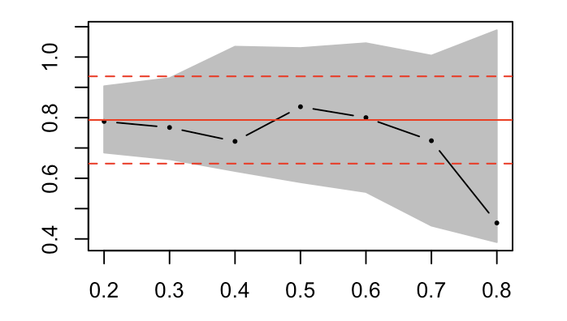
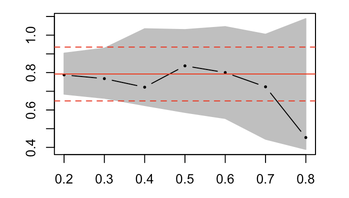
Multi-Level Models 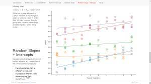
Bayesian Methods 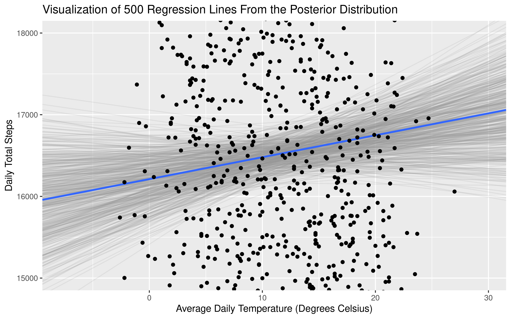
Approach 2: Black Box
E.g. Gaussian Processes
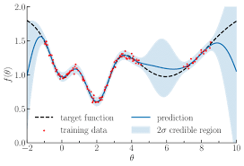
What about Project Bias
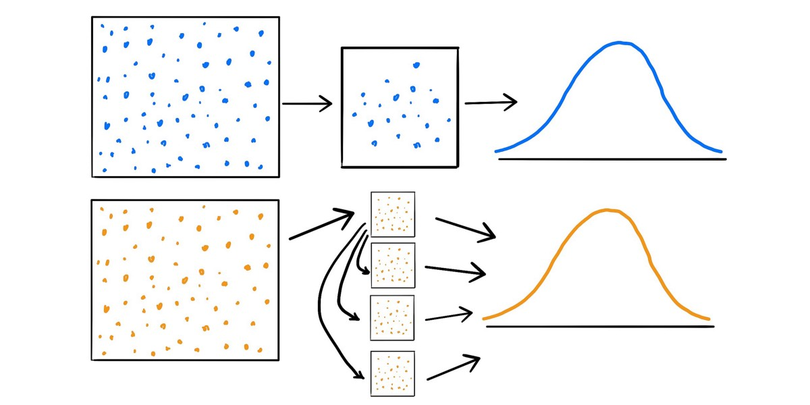
Bootstrapping!
Summary
- Mapping farmers could be important for targetting, but we know little
- To map farmers we need to understand how characteristics vary across different scales
- Only after we understand which types of heterogeneity dominate, can we begin to think about what what predictions we can make
- Once we better understand these types of heterogeneity we can then make more informed decisions about “filling in the gaps”